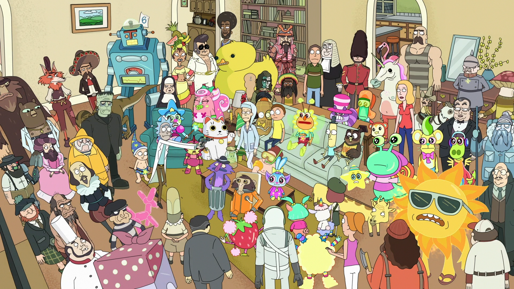

A little bit abut me....I spent 12 years in the military. 6 Navy and Army. I was lucky to have the
opportunity to do and experience a lot of different jobs and learned skills. I have three children. All boys.
They live with their mom in Spokane and they are 14, 10, 8.
I was born in Peru. Then lived in California, Now Washington.
I started my own Coffee company I started it mid-pandemic.
It's always a work in progress.
I got into computers back in 1994, I used to build them, I played around with hyper terminal and built some
phreak
boxes. I also Installed programs.
In the Navy I was a Gas Turbine electrical tech, and I was also part of the ships first responder fire
fighting team. I used to be on helicopter "crash and salvage" fire fighting flight deck team. In the Army I was
Military Police, and a few other things, from communications, networking, mechanics, watercraft, etc.
On the civilian side I've worked as a Power plant operator, field service diesel generator technician, I've
been a field service engineer in the process industry, working with Programmable logic controllers, and
robotics.
I did a lot of automation, and learn something about programming. Learned A LOT about LOGIC.

My top 10 songs for the week
- C131 - Get Schwifty
- Megan thee stallion - Body
- Bad Bunny - titi me pregunto
- Megan thee stallion - Savage
- Daddy Yankee - Dura
- Ryan Castro - Mujeriego
- Lil Yatchy -TD
- Post Malone - WOW
- CJ - Whoopty
- The Junior Beat - Surfin' Bird
Work experience
- Field service engineer
- protective details
- Power plant operator
- PLC's
- programming
- update logic programs
- software push/pull
- detainment and search
- joint task force
- update HMI display software
- preventive maintenance
- Military Police sergeant
- tactical operations
- anti-terrorism
- CQC
- load banking
- input/output validation
- programing and setting defaults
- Robotics
- operations
- gas turbines